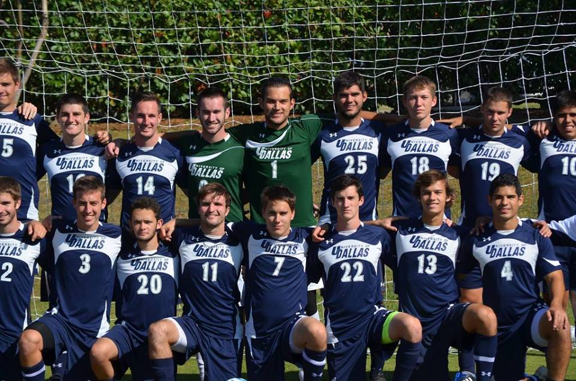

Who We Are
This website and the 501c3 associated, Crusader Alumni Soccer Fund, was created on behalf of the CASF Board and in conjunction with the alumni soccer network at large. We continue to evolve this website and ask others to do the same in order to connect the UD Soccer community, to promote the program and strengthen the bond we share.